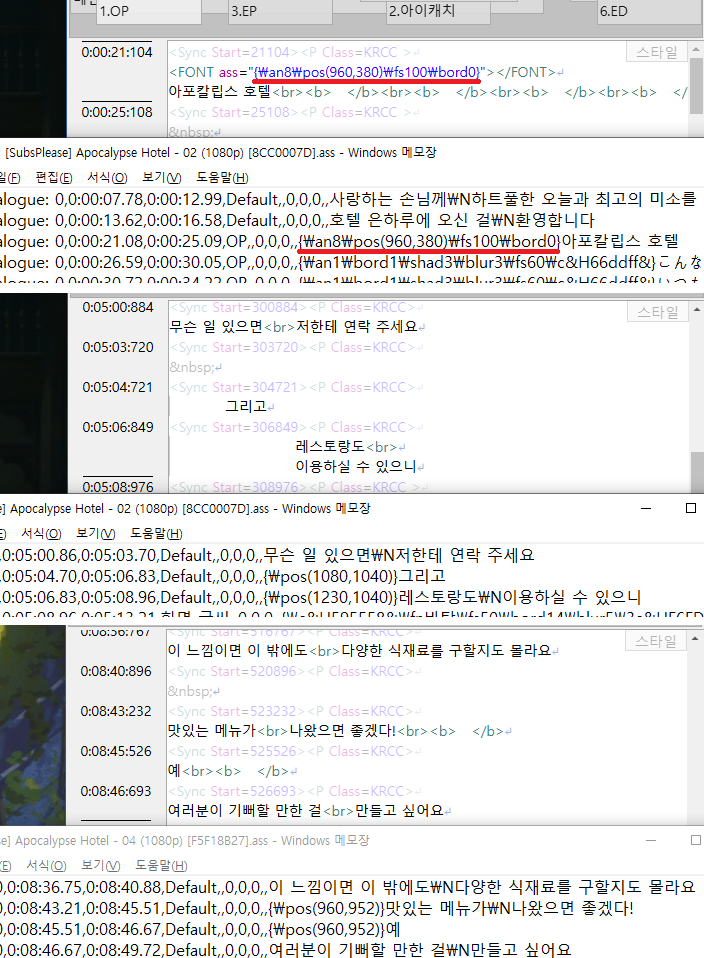

기능 활성화
Jamaker에서는 SMI 자막을 프로젝트 파일처럼 활용해 ASS 자막을 관리하는 기능을 지원합니다.
SAMI 태그에 ass 속성을 넣으면 변환 기능이 활성화되며, 저장 시 smi 파일과 같은 이름의 ass 파일이 함께 저장됩니다.
각각의 홀드는 ASS 자막의 스타일과 연동되며, 스타일이 동일할 경우 홀드명 중복을 허용합니다.
메인 홀드는 Default 스타일로 할당됩니다.
활용
아래에 설명할 ASS 변환용 문법을 수기로 입력하는 경우는 많지 않습니다.
기본적으로는 원래의 smi 파일에서 생성한 ass 파일 초안을 Aegisub 등에서 수정 작업을 거쳐 완성본을 만듭니다.
Jamaker에서 해당 smi 파일이 열린 상태에서 ASS 자막을 읽으면 내용물을 비교하여
해당 ASS 자막을 구현할 수 있는 형태로 SMI 자막에 변환용 문법을 생성해 줍니다.
※ 역반영은 작업자의 의도에 따라 추가 교정이 필요할 수 있습니다.
상호 변환 과정에서 정확한 싱크 보정치가 필요하므로, 해당 동영상이 열린 상태에서 작업해야 합니다.
이와 관련해, Aegisub-팟플레이어 간에 간혹 1프레임씩 어긋나는 현상도 바로잡아 줍니다.
작업이 모두 정상적으로 이뤄진다면, SMI 자막만 각 영상에 맞춰 조정하면 ASS 자막을 함께 재생성할 수 있습니다.
문법
FONT 태그에 ass 속성을 넣어 ASS 자막에만 쓰이는 태그 등을 넣을 수 있습니다.
해당 태그로 감싼 내용이 있을 경우 ASS 변환 시 치환되어 사라집니다.
SMI 스크립트에서 공백문자로 위치를 조정한 경우, 자동으로 \pos 태그를 생성해 주지만
해당 태그로 강제할 경우 해당 태그의 내용으로 적용됩니다.

주석 형태를 통해 SMI의 한 싱크에 여러 개의 ASS 스크립트가 들어가는 걸 지원합니다.
END로 끝맺음할 경우 SMI 내용을 무시하고 해당 주석의 내용물만으로 ASS 자막을 구성합니다.
ASS 주석의 내용물은 기본적으로 [Layer, (empty or add), (span or add), Style, Text] 형태로 구성되며,
[Name, MarginL, MarginR, MarginV, Effect] 속성은 의도적으로 배제했습니다.
레이어 번호는 그대로 쓰이지 않고, ASS 변환 시 재계산을 거칩니다.
SMI 기반 생성물보다 위로 올라와야 할 경우, 레이어는 200보다 큰 값을 넣어야 합니다.
경험적으로 한 싱크에 스크립트 100개 단위까진 생성해 본지라
스타일 값을 비울 경우 홀드의 스타일을 따라갑니다.
두 번째 항목이 비어있을 경우 세 번째 항목(span)의 값에 따라 더 뒤쪽의 싱크를 종료싱크로 가져옵니다.
두 번째 항목이 숫자인 경우 두세 번째 항목(add)의 값에 따라 SMI 싱크에 비해 전후로 확장/축소됩니다.
세 번째 항목이 '+'로 시작하면 종료싱크가 아닌 시작싱크를 기준으로 계산합니다.
두 가지 싱크 변형을 모두 사용하고 싶으면 [Layer, -, span(add, add), Style, Text] 문법을 사용할 수 있습니다.
싱크를 변형한 내용물을 수정할 경우엔 역반영 시 원본 찾지 못하게 되므로
싱크 변형을 활용하기 전에 다른 효과는 완성해두는 걸 권장합니다.
SMI 내용물 혹은 텍스트를 재활용하기 위해 [SMI], [TEXT]를 사용할 수도 있습니다.
해당 주석의 내용물은 [Layer, Style, Text] 형태로 줄여 쓸 수도 있으며
이를 구별하기 위해 홀드명은 숫자로만 구성할 순 없습니다.
SMI 에디터 내에서 표현하기 어려운 스크립트를 위해 추가적인 ASS 에디터가 존재합니다.
이쪽에선 [Layer, Style, Text] 형태만을 지원하며, 체크박스는 화면 싱크 여부를 표시합니다.
자막 제작 단계에서 쓰려고 만든 기능이 아니라
ASS 자막을 역반영 시 기존 홀드에 들어가지 못한 스크립트를 위해 만든 기능입니다.
때문에 이쪽에서 직접 스크립트를 추가하는 작업은 권장하지 않으며,
신규 홀드를 분리하여 SMI 형태로 꺼내는 기능을 지원합니다.
기존 ASS 자막 가져오기
SMI 파일에 내용물이 없는 상태에서 ASS 파일을 불러와, 해당 ASS 자막용 프로젝트 파일을 구축할 수 있습니다.
기본적으로 메인 홀드에는 Default 스크립트만 들어가며, 홀드가 없는 스타일은 추가 스크립트로 가져옵니다.
이런 경우를 위해 홀드 분리 기능을 지원합니다.
홀드 분리 시, 다른 스타일의 스크립트도 싱크가 동일하다면 함께 가져오기도 합니다.
SMI 내용물의 싱크와 매칭되지 않는 스크립트는 메인 홀드를 제외하면 기본적으로 화면 싱크로 반영합니다.
SMI에 없던 내용물은 일단 출력되지 않는 ASS 변환용 주석으로 생성되지만,
'ASS 기반 SMI 텍스트 생성'을 통해 SMI 출력물을 만들기 위한 초안을 만들 수 있습니다.
해당 기능은 주석에 END가 없던 경우에 한해 동작하며
메인 홀드 외에는 원래의 ASS 스크립트를 삭제하지 않습니다.